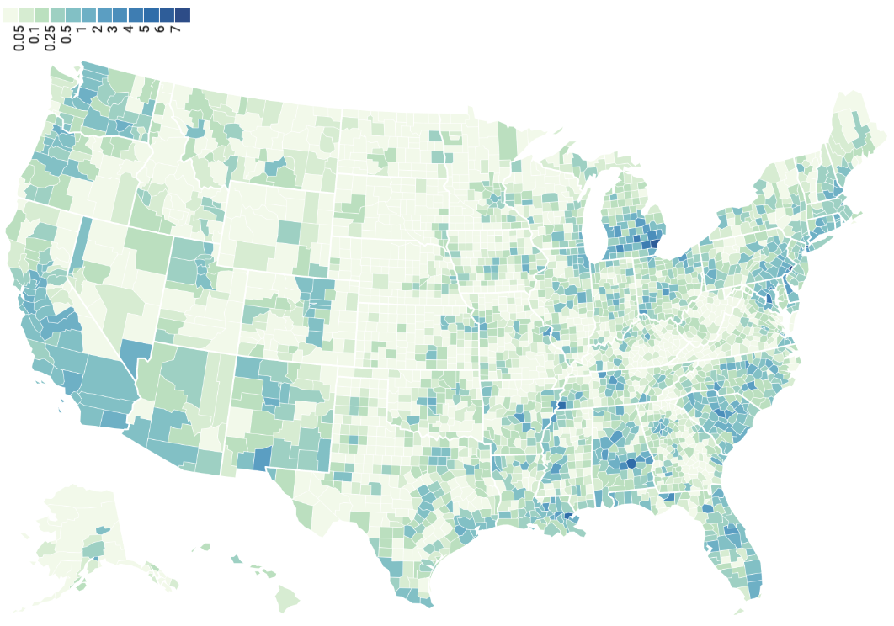
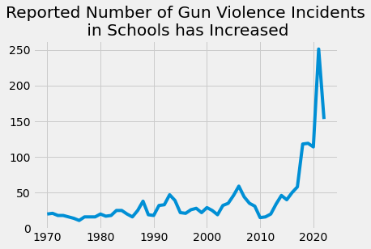
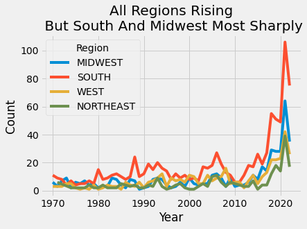
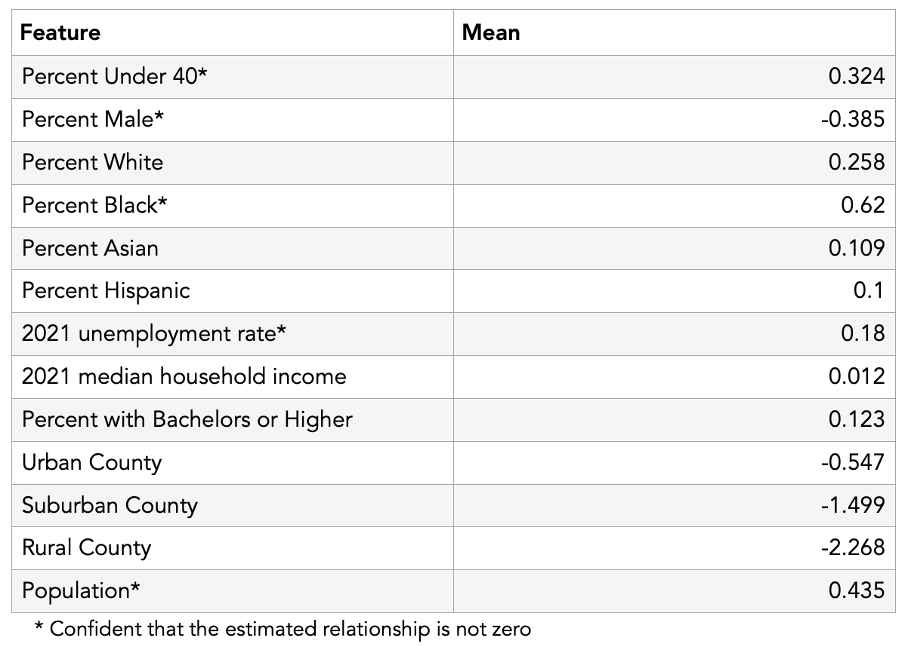
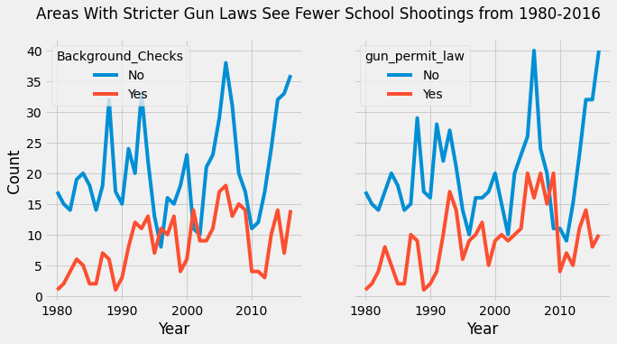
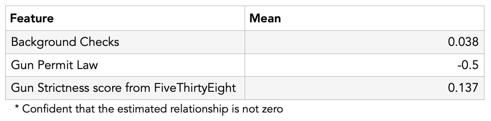

Bayesian County-Level Analysis of School Shootings

Introduction
TLDR : Learn a few facts about school shootings by looking at the figures/tables below.
Recently, there has been a lot of talk about gun violence, school shootings, and various policy proposals (they actually just passed a law about this). People have opinions on all sides of these issues, but I wonder how many people understand key questions about the context of gun violence. Here are a few examples - specifically about school shootings which is the focus of this article:
- How often does gun violence at school happen? Is the rate increasing or decreasing?
-
Are gun violence incidents in schools concentrated in particular regions in America? If so, which?
-
Do factors like living in a rich vs. poor area, predominantly white area, or other demographic factors change the likelihood of gun violence in schools?
- What effect, if any, do various gun laws already in-place have on school shootings?
In this post, I try to show the data behind a few of these questions in as non-partisan a way as possible.
Data
After the Uvalde school shooting earlier this year, I saw a short article on USAFacts about school shootings. They made a figure visualizing trends from a rich dataset from the U.S. Department of Homeland Security. This dataset has a record of every school shooting in the last 50 years as well as interesting variables such as links to news articles, approximate number of shots fired, description of the event, and the school where it happened.
From the city variable, I matched cities to counties and aggregated the shootings by county, so you could see how many school shootings were in each county in the US the last 50 years. From this point, I joined in several county-level datasets mostly from the census and a few other sources which have information like average income, percent educated at various levels, race, unemployment rate, laws, etc. all at the county level.
Limitations
First, it’s important to understand that school shootings in this dataset include…
“all incidents in which a gun is brandished or fired or a bullet hits school property for any reason, regardless of the number of victims (including zero), time, day of the week, or reason (e.g., planned attack, accidental, domestic violence, gang-related).” - NCES
This opens up wiggle room because perhaps the incident wasn’t very severe (e.g. if there was only brandishing) and perhaps these account for a lot of the dataset. Turns out, as seen here (comparing fig2 and fig3 in this article) the majority of incidents result in at least one injury/deceased person. Also, for every record of school shootings, we have a description of the event which you can browse here if interested. I found when looking through that most of these cases seem like significant incidents. Besides, even in an incident where there was brandishing (threateningly waving a gun around) and no casualties, it would likely still be a impactful/scary incident for the child and parents. I also believe a similar thing for many accidental occurrences which could also be impactful/scary. For these reasons, I include all these cases in my analysis.
Next, it is worth noting that because there are incidents that were perhaps never reported in some areas. This could lead to some bias especially if one region was significantly less likely to report incidents. However, in my mind, most areas should have a similar negative incentive to not report something like this because every school with a shooting looks bad whether in New Hampshire, South Carolina, or any other state.
Alright now for our questions…
How often do school shootings happen? Is the rate increasing or decreasing?

Above, we have simply the raw counts of all school shootings in the last 50 years. It’s pretty clear that the rate is increasing. Also, if you only look at deaths and injuries fig2 at this link, both of the trends - number of deaths and number of injuries from school shootings - seem to be increasing as well.
To give you a sense of how often these happen: if there are 130,000 schools in the US, and just over 250 shooting incidents this last year, your child’s school has about a r round(250/130000*100, 1)% chance of seeing a shooting which is about 1 in 500. To put this in perspective, the odds of dying in a car crash is 1 in 114 and the odds of dying in a plane crash is 1 in 9,821 (according to this random website), so somewhere in between there i guess😂.
Though I won’t spend any more time on this question now, fig 2 in this article details information about the shooters intent which I find interesting.
Are gun violence incidents concentrated in particular regions in America? If so, which?

Just from looking at the counts by region, gun incidents overall are more likely to occur in south - in a trend that has stayed consistent for the past 30 years. The gap between the south and the other regions seems to have grown wider in the past two years whereas before the south counts seemed only a little bit higher than the other regions.
Using my model, I generated predictions for all US counties below where we can see where the model predicts areas of higher concentration across the US. Hover to find the exact prediction for your county!
Generally, I feel the biggest take-away from the map above is that more populated counties are more likely to have school shootings which makes sense. For example, WY and the Dakotas have a low population and are not predicted to have many, but coastal areas such as CA are darker (meaning more predicted school shootings).
But, population isn’t the only factor, there does seem to be some hot spots, take Michigan and South Carolina for example. The map shows those two states seem darker in more areas than just their cities. These darker spots in less populated area are due to other factors that affect school shooting which we will talk a little more about in the next section.
Do factors like living in a rich vs. poor area, predominantly white area, or other demographic factors change the likelihood of a school shooting?

Methodology note: For those interested, I estimated the model using Bayesian techniques (MCMC-style sampling in estimating the posterior distribution). I tested several models, but saw the best performance (best WAIC score) using a state-level random-intercepts negative-binomial regression. More info and code I used in github.
Here is a table of selected features in my model (some are not included here for brevity’s sake). There are three easy ways to interpret this table: First, is it positive of negative? Positive numbers increase the number of school shootings while negative numbers decrease. Next, how big is the Mean relative to the others? With bigger numbers, the model estimates it has a bigger effect on school shootings and vice versa for smaller numbers. And, thirdly, Is the feature starred? We are more confident in the estimates of the starred features and not as confident in those that are not.
Significantly, the biggest starred feature is percent black in a county. The coefficient is high and it is starred. The direct interpretation of this model is we are around r round(exp(0.62))x as likely to see a shooting in counties as we increase 1 standard deviation in percent black in a county when controlling for the other features in the model. There is no effect for the other races.
Another interesting tidbit is what doesn’t seem to matter. In our model, all of the education variables (some are not included in this table) and the income variable do not have a star indicating there is no clear relationship - in essence, wealthy counties and educated counties seem to be just as likely to have school shootings than poor counties and non-educated counties. It is possible that this could not be true for counties that are both poor and uneducated, but I didn’t test this relationship specifically. Also, I don’t have a measure of income disparity here which could be significant. For example, a county that has a lot of really poor people and a lot of really rich people may have the same median income as a county with a lot of middle income people. I suspect this might be the case because we are confident counties with high unemployment rates are more likely to have school shootings (coefficient is positive and starred).
One last thing I’ll mention is that counties with more people are more likely to see school shootings, but these aren’t necessarily correlated to how urban/rural an area is. This is contrary to my prior belief about this.
What effect, if any, do various gun laws (already in-place) have on school shootings?

From looking at the raw counts, while noisy, we can see that generally counties with state laws for universal background checks and gun permit laws see lower numbers for school shootings.

However, when controlling for other variables in our model, we are not confident that these laws have a positive effect on curbing gun violence in schools. For universal background checks, our model actually estimates a slight positive relationship, which could suggest that gun permit laws are more effective than background check laws at curbing violence in schools. This is also seen in the fivethirtyeight score - where there is no conclusive relationship between gun law strictness and state scores.
Methodology note: Because of my model specification, I was only able to include a snapshot in time of state gun laws, so I included what the universal and gun permit laws were as of 2016; but, this data includes incidents from the past 50 years. I used a snapshot of gun laws with the assumption that states in the past 50 years with stricter laws generally continued to have stricter laws through the time period and vice versa. The object of this model and post is only to get a general overview and not a deep dive analysis on the effectiveness of gun laws, but perhaps I will do this in the future.
Conclusion
My personal takeaways from the analysis:
- There seems to be evidence that gun violence is increasing in schools - especially in the last 3 years. Injuries, deaths, and non-fatal incidents have all increased.
- Counties with a 1 standard deviation of a higher black population are twice as likely to see school shootings. Whereas, rich counties and educated counties are just as likely as non-rich and non-educated counties to see school shootings.
- We saw lower trends in shootings among states that had stricter gun laws when looking at the counts, but when we controlled for other variables, these effects went away. I noted, though, with our model we choose, it is good at getting a general overview of relationships, but a different model might be better at parsing out directly the effectiveness of these gun laws. So, I would say our findings here are overall inconclusive.
Hopefully, you’ve learned a thing or two at best to have more context into our gun control controversy and at worst to have something to keep the conversation going at dinner tonight (and keep it spicy because you would be discussing politics).
Feel free to message me with questions about the methodology or anything else or comment below! I have all my code at this repository.